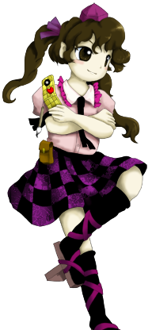

- Welcome to Touhou Wiki!
- Please register to edit. For assistance, check in with our Discord server or IRC channel.
Hatate Himekaidou
Hatate Himekaidou çimekaidoː hatate (♫) | |
|---|---|
|
Hatate in Double Spoiler Modern-Day Spirit Photography ReporterMore Character Titles | |
| Species | |
| Abilities | |
| Occupation |
Reporter |
| Location | |
Appearances | |
| Official Games | |
| |
| Print Works | |
| |
Hatate Himekaidou (姫海棠 はたて Himekaidou Hatate) is the deuteragonist of Double Spoiler. She's a tengu reporter who produces the Kakashi Spirit News. Unlike her colleague Aya Shameimaru, she never goes outside for her newspaper research. Instead, she uses her ability called thoughtography (念写 nensha). After reading Aya's Bunbunmaru Newspaper, she decided to observe Aya's way of gathering for her articles. She first appeared in Double Spoiler and subsequently has only appeared in spin-off games.
Character Design[edit]
Name[edit]
Her full name is Hatate Himekaidou (姫海棠 はたて). The kanji for 姫海棠 (Himekaidou) mean "princess", "sea/beach" and "crabapple tree" respectively. Himekaidou itself is a kind of toringo crabapple. Hime kaidou also refers to a side-road, often taken by women or travelers who wanted to avoid thieves.
Design[edit]
Hatate is shown to have brown eyes, and long brown hair in pigtails with purple ribbons. She wears a pinkish shirt with purple trim on the collar and a thin black tie, a black band around one arm, a purple tokin, a skirt in black/purple checker pattern with a floral pattern on the purple, a small brown pouch on her hip, thigh-high black socks (which are rolled down just below her knees), and pale purple-ish red geta sandals with purple straps. She carries a camera, looking like a modern cell phone, with a yellow/dark yellow checker pattern, a heart on it, and a brush hanging from it like a charm. Just like Aya, she is also shown to have pointed ears in her Double Spoiler artwork.
Hatate's clothes have a lot of purple color. Purple color symbolizes "mystic" or "royalty". "Mystic" might be associated with her spiritual powers. "Royalty" might refer to Himekaidou - princess. It may be also a reference to the deadly sin, "pride".
Story[edit]
Spin-off games[edit]
- Double Spoiler
- Main article: Double Spoiler Story
In Double Spoiler, Hatate appeared as a Spoiler stage target (after the Extra stage), who confronts Aya, and has a picture-taking showdown with her, all the while debating the pros of her journalistic style and the cons of Aya's journalistic style, forcing Aya to take photos of her spell cards. Hatate has a unique way of danmaku, and that is taking her own photo's of Aya's hit box. If defeated, Hatate becomes the second playable character, having to re-visit all the cast characters and take photos of their spell cards Aya has already covered, hence the word "Double" in the game's title. The gameplay with Hatate is extremely similar to Aya's, with minor differences.
- Hopeless Masquerade
Hatate made a background cameo appearance in Hopeless Masquerade on the Myouren Temple and Genbu Ravine stage. She is seen standing on top of the temple in the former and on a pipe in the latter, taking photographs with her thoughtography camera.
- Impossible Spell Card
In Impossible Spell Card, Hatate (been one of the tengu mentioned by Mamizou Futatsuiwa) takes notice of minorities trying to capture the mischief-making amanojaku Seija Kijin, who also appears to be one of the many youkai that tries to capture her on day 6. She uses spell cards that are considered impossible to dodge. She apparently writes up an article about this, which makes stronger humans and youkai try to capture Seija.
Literature[edit]
- Wild and Horned Hermit
In Wild and Horned Hermit, she and Aya Shameimaru appear to be covering Kanako Yasaka's nuclear reactor experiment, which may point to Hatate trying to collect field data.
Relationships[edit]
Aya Shameimaru[edit]
As of Double Spoiler, Hatate regards Aya as a rival newspaper writer and competitor.
Minor Relationships[edit]
Hatate appears to somewhat admire her colleague Momiji Inubashiri's senses of sight and smell, and is rather impressed by her spell cards.
Hatate's chief is Tenma.
Gallery[edit]
Cover of Double Spoiler, featuring Hatate's silhouette
Hatate's appearance in Wild and Horned Hermit
Spell Cards[edit]
| Name | Translated | Comments | Games | Stage | ||
|---|---|---|---|---|---|---|
| Total: 5 | ||||||
| 取材「姫海棠はたての練習取材」 | Reporting "Hatate Himekaidou's Reporting Training" | DS | St. Sp | |||
| 連写「ラピッドショット」 | Continuous Shooting "Rapid Shot" | DS | St. Sp | |||
| 遠眼「天狗サイコグラフィ」 | Far-sightedness "Tengu Psychography" | DS | St. Sp | |||
| 写真「フルパノラマショット」 | Photography "Full Panoramic Shot" | ISC | St. 6 | |||
| 写真「籠もりパパラッチ」 | Photography "Secluded Paparazzi" | ISC | St. 6 | |||
Additional Information[edit]
- A silhouette of Hatate occupies the front of Double Spoiler's jewel case.
- Her thoughtography camera closely resembles a cell phone of some sort. It was apparently made by the kappa. It is possible that the kappa reverse-engineered something left behind by someone who was spirited away to Gensokyo.
- The articles on her in Alternative Facts in Eastern Utopia imply that she is younger than Aya.
Fandom[edit]
Official Profiles[edit]
|  | 姫海棠 はたて
種族：鴉天狗 彼女は新聞記者なのだが、外へ取材に出かける事は無かった。 念写とは、はたての持っているカメラにキーワードを入れるとそれにちなんだ写真が見つかるという物だった。 はたてはそれを便利に思い、家から出る必要性を感じなくなってしまったのだ。 彼女の書く新聞、「花果子念報」は余り人気が出なかった。 そんな時、彼女は文の書いた「文々。新聞」に目を付けた。 「こんなに出鱈目の記事なのに、不思議と魅力があるのは何故だろう。 彼女はそこで文の秘密を知った。 |
Modern-Day Thoughtography Reporter
Race: Crow Tengu Hatate is a reporter that never goes outside for her newspaper research. Hatate's thoughtography works by inputting keywords for her camera, which she uses to find associated photos. She doesn't feel the need to go outside because this is convenient. The newspaper she writes, Kakashi Spirit News, has never been that popular. Then Hatate read Aya's Bunbunmaru Newspaper. "These articles are utter nonsense, but why do they have this strange appeal? Why is it that its headlines never overlap with other newspapers'?" In order to find out Aya's secret, Hatate decided to observe her. That was when she found out Aya's secret. |
Official Sources[edit]
- 2010/03/14 Double Spoiler - Stage Spoiler dialogue; Spellcard comments; Omake.txt (official profile)
- 2010/09/25 Wild and Horned Hermit - Chapter 2
- 2010/11/10 Oriental Sacred Place - Chapter 12
References[edit]
| This page is part of Project Characters, a Touhou Wiki project that aims to write proper descriptions for all official characters of Touhou Project. Please keep the character page guidelines in mind when contributing. |